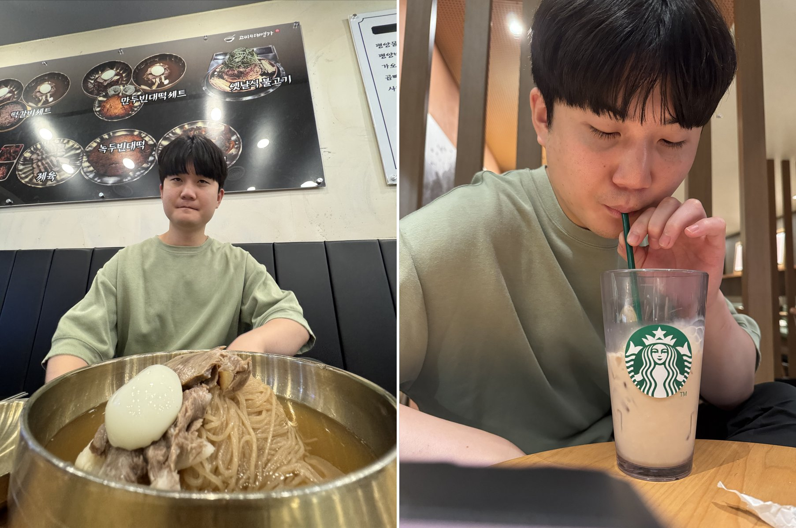

Weekly Drinking Promotion
Association (WDPA)
입력 : 2026년 8월 14일

김성민 해외지부 운영총괄 출국 전 마지막 국내 일정 / 사진=WDPA
미국 텍사스 복귀를 앞둔 김성민 해외지부 운영총괄이 14일 최민규 상근부회장과 함께 평양냉면 전문점을 찾아 출국 전 마지막 ‘고향의 맛’을 즐겼다.
전날 황소고집에서 시작해 볼링장과 송병완 상무이사의 ‘한세권 팬트하우스’까지 이어진 대규모 송별 회동을 마친 지 채 하루가 지나지 않은 시점이었다.
협회 관계자에 따르면 김 총괄은 이날 “텍사스로 돌아가면 너무 그리울 것 같은 음식이 하나 있다”며 평양냉면을 마지막 식사 메뉴로 직접 제안한 것으로 알려졌다.
오랜 해외 생활을 앞두고 자극적인 음식보다 담백한 육수와 메밀 향이 어우러진 평양냉면 한 그릇을 통해 고향에 대한 그리움을 미리 달래겠다는 취지였다.
이에 최 상근부회장은 김 총괄과 함께 인근 평양냉면 전문점을 찾아 조용한 점심 일정을 시작했다.
두 사람의 메뉴 선택에서는 각자의 확고한 식문화 철학이 그대로 드러났다.
김 총괄은 맑고 담백한 육수에 메밀면을 담아낸 평양냉면을 선택했다. 반면 평소 뜨거운 국물요리에 남다른 애정을 보여온 최 상근부회장은 장시간 우려낸 육수와 큼직한 갈비가 어우러진 갈비탕을 주문하며 한여름에도 흔들리지 않는 ‘열탕주의’ 노선을 고수했다.
한 관계자는 “한 명은 차가운 육수로 고향을 추억했고 다른 한 명은 뜨거운 국물로 땀을 흘렸다”며 “같은 테이블에서도 서로 다른 방식으로 한국의 국물 문화를 체험한 셈”이라고 평가했다.
다만 식사가 시작될 무렵 김 총괄의 컨디션에서 미세한 이상 징후가 포착됐다.
전날 1차부터 3차까지 장시간 이어진 송별 회동에서 섭취한 주류의 여파가 뒤늦게 올라오면서 평양냉면을 앞에 두고 잠시 숙취 증세를 보인 것이다.
협회 관계자는 “첫 젓가락이 투입되기 직전까지 표정에서 다소 피로감이 관측됐다”며 “전날 데프콘 1급 송별 체제의 후유증으로 판단했다”고 설명했다.
그러나 고향의 맛 앞에서 김 총괄의 회복 속도는 빨랐다.
김 총괄은 담백한 육수와 메밀면을 천천히 섭취하며 빠르게 안정을 되찾았고, 결국 그릇을 완벽하게 비워내며 평양냉면 일정을 성공적으로 마쳤다.
식사를 마친 두 사람은 곧바로 다음 장소로 이동하지 않고 약 35분 거리에 위치한 스타벅스까지 도보 이동을 선택했다.
협회 내부에서는 해당 이동을 단순 산책이 아닌 ‘출국 전 소화기관 정상화 및 오후 일정 대비 컨디션 회복 프로그램’으로 분류하고 있다.
약 35분간의 도보 프로그램을 마친 최 상근부회장은 김 총괄에게 벤티 사이즈 돌체 콜드브루를 제공했다.
달콤한 연유와 콜드브루가 결합된 해당 음료는 강력한 카페인과 유제품의 조합으로 일부 한국인들 사이에서 이른바 ‘한국인의 비공식 변비약’으로 통하는 음료다.
최 상근부회장은 이날 밤까지 이어질 가능성이 있는 추가 일정에 대비해 김 총괄의 체내 잔여물을 선제적으로 정리하고 새로운 음식과 주류를 받아들일 공간을 확보해야 한다는 판단 아래 가장 큰 벤티 사이즈를 선택한 것으로 전해졌다.
한 관계자는 “출국을 앞둔 해외지부 운영총괄의 장 건강까지 관리하는 일종의 복지 프로그램”이라며 “단순한 커피 제공으로 보기에는 상당히 전략적인 선택이었다”고 말했다.
실제로 돌체 콜드브루 섭취와 충분한 휴식 이후 김 총괄의 컨디션은 눈에 띄게 회복됐다.
두 사람은 다시 도보로 수지구청 일대까지 이동하며 남은 한국 일정과 텍사스 생활 등에 대한 이야기를 나눴다.
그러던 중 이날 일정에는 예상하지 못했던 인물이 합류했다.
수지구청 인근에서 김 총괄의 친동생과 갑작스럽게 만남이 성사된 것이다.
별도의 사전 의전이나 공식 일정 조율 없이 이뤄진 만남이었지만 최 상근부회장은 김 총괄의 친동생과 자연스럽게 인사를 나눴고, 세 사람은 인근에서 소박하게 술잔을 기울이며 대화를 이어갔다.
낮에는 전날의 술을 해소하기 위해 평양냉면과 커피, 장시간 도보 프로그램까지 진행했지만 해가 저물 무렵 다시 술잔이 테이블 위에 올라오면서 협회 특유의 빠른 일상 복귀 능력도 확인됐다.
한 관계자는 “오후까지는 분명 숙취 해소 프로그램이 진행 중이었던 것으로 알고 있다”며 “저녁에 다시 술을 마신 것을 보면 프로그램이 성공적으로 종료된 것으로 판단된다”고 말했다.
이날 술자리는 전날처럼 대규모 인원이 참석한 공식 송별 회동도, 거창한 행사가 준비된 자리도 아니었다.
세 사람은 소박하게 술잔을 기울이며 이야기를 나눴고, 김 총괄의 텍사스 복귀를 앞둔 마지막 국내 일정 가운데 또 하나의 평범한 추억을 남겼다.
전날 핵심 운영진과 함께한 떠들썩한 송별 회동에 이어 이날은 평양냉면 한 그릇과 커피 한 잔, 그리고 가족과의 술자리로 하루가 채워졌다.
협회 관계자는 “평소와 크게 다르지 않은 하루였기 때문에 오히려 더 오래 기억에 남을 것”이라며 “멀리 떨어져 있더라도 다시 만나면 평소처럼 술 한잔하면 되는 것 아니겠느냐”고 전했다.
한편 길게 이어졌던 김성민 해외지부 운영총괄의 국내 일정도 이제 막바지에 접어들었다.
평양냉면 한 그릇으로 고향의 맛을 새기고, 익숙한 사람들과 마지막 술잔을 나눈 김 총괄에게 이제 남은 것은 다시 텍사스로 향하는 일뿐이다.